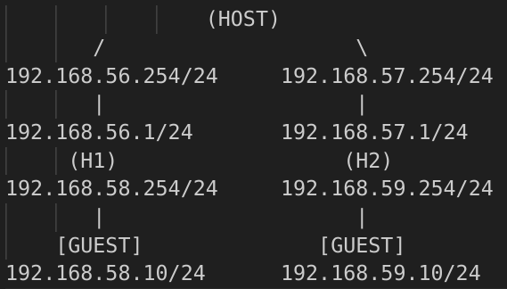

Ubuntu version 22.04.3 LTS
The topology:

Configure 2 Host-only interfaces on the host in VirtualBox and disable DHCP:
First network is 192.168.56.254/24 (.254) is the gateway Second network is 192.168.57.254/24
Host-only interface enables an isolated network in which guests can communicate with each other and the host, However outside hosts cannot communicate with that network, as it doesnt have external access.
Now we need two ubuntu machines(H1 & H2), each will act as the router between our main guest, and the and internal machines H1 & H2.
Edit /etc/netplan/01-network-manager-all.yaml on H1 for interfaces configuration, here
we are going to add route to anything thats not within this internal network .254:
network:
version: 2
renderer: NetworkManager
ethernets:
enp0s3:
addresses:
- 192.168.56.1/24
routes:
- to: default
via: 192.168.56.254
Edit the same file on H1 Guest:
network:
version: 2
renderer: NetworkManager
ethernets:
enp0s3:
addresses:
- 192.168.58.10/24
routes:
- to: default
via: 192.168.58.254
Edit /etc/netplan/01-network-manager-all.yaml for interfaces configuration, here we are going to add
route to anything thats not within this internal network .254:
network:
version: 2
renderer: NetworkManager
ethernets:
enp0s3:
addresses:
- 192.168.57.1/24
routes:
- to: default
via: 192.168.57.254
Edit the same file on H2 Guest:
network:
version: 2
renderer: NetworkManager
ethernets:
enp0s3:
addresses:
- 192.168.59.10/24
routes:
- to: default
via: 192.168.59.254
Forward any packets which do not much the routes in the kernel routing table: (not permanent)
echo 1 > /proc/sys/net/ipv4/ip_forward
ip route add 192.168.58.0/24 via 192.168.56.1
ip route add 192.168.59.0/24 via 192.168.57.1
Now both guests should be able to ping each other.